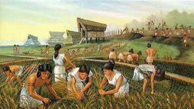
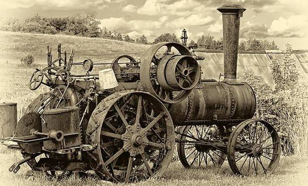
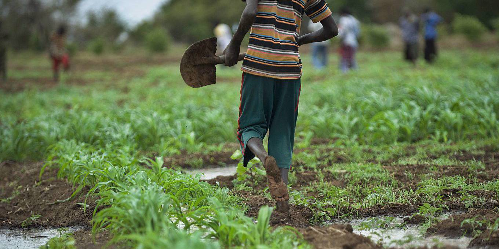
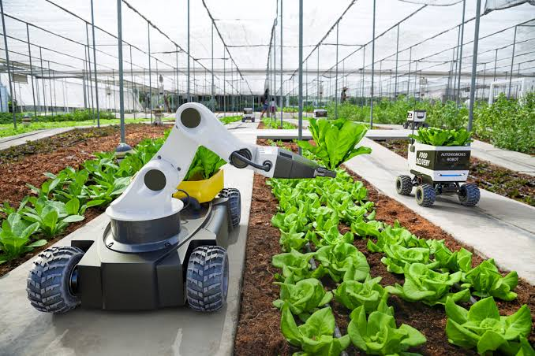

Agricultura 3.0 (1990 a 2010)
A agricultura começou a utilizar GPS, computadores, sensores e sementes transgênicas. As máquinas passaram a trabalhar com mais precisão, reduzindo desperdícios e melhorando o plantio e a colheita.

A agricultura dependia principalmente da força humana e animal, com ferramentas simples, como enxadas e arados. A produção era mais lenta e exigia muito trabalho físico.

O surgimento dos tratores, dos fertilizantes industriais e os avanços no melhoramento de sementes começaram a transformar a agricultura, permitindo produzir mais em menos tempo.

Foi um período de 1970 a 80 marcado pelo uso de máquinas, fertilizantes químicos, pesticidas e sementes melhoradas. Essas mudanças aumentaram a produção de alimentos, mas também trouxeram problemas ambientais.

A criação da Embrapa, em 1973, impulsionou pesquisas para adaptar a agricultura ao clima brasileiro. O Cerrado passou a ganhar destaque na produção agrícola.
A agricultura começou a utilizar GPS, computadores, sensores e sementes transgênicas. As máquinas passaram a trabalhar com mais precisão, reduzindo desperdícios e melhorando o plantio e a colheita.
A tecnologia digital ganhou ainda mais espaço no campo, com drones, satélites, sensores conectados, Internet das Coisas e Inteligência Artificial. Essas ferramentas ajudam a monitorar plantações e melhorar as decisões dos produtores.
